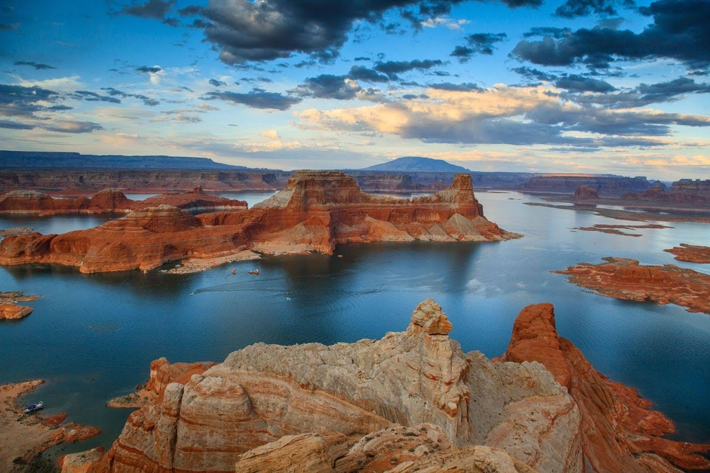

My name is Chase Bennion. I am from Salt Lake City, Utah. I was born March 4, 2001 to Rick and Robyn Bennion.
Some of my favorite things to do include sports such as football and lacrosse. I love going to Lake Powell and Hawaii with my family. I'm currently attending BYU studying Finance.
This is Lake Powell. Lake Powell is located in the South East corner of Utah. It is home to some of the best boating recreation in the world. The views are breathtaking. This is a place where you play to your hearts out. Currently Lake Powell is experiencing low water levels. Click on the link below to learn more about the water level.
Lake Powell Water Database Website
My favorite sports inlcude football and lacrosse. I played Football for Olympus High School in Salt Lake City. Our team went 13-1. We lost in the semi-finals to Corner Canyon. I was awarded first-team allstate running-back and offesive MVP. Football is the best becuase you're on a team that becomes your family. The game is exciting where it can come down to inches. Not only is the intesity high, your adrenaline pumps like it never has before.